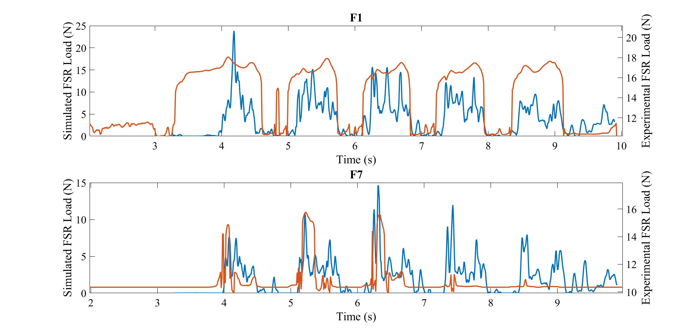

Exoskeletons make good walking aids?... Maybe
Measuring the forces between a person and an exoskeleton with an instrumented thigh brace.
To build a safe exoskeleton, you first need to know how hard it pushes on the body.
Falls are a leading cause of injury for the elderly and people with gait impairments. An exoskeleton that catches a slip or trip could help, but if the forces between the device and the leg aren't understood, you get discomfort, skin damage, or a controller that behaves badly. Load cells measure this well but they're bulky. We wanted to see if a soft brace with simple force sensors could do the job instead.
A brace with 8 force sensors can pick up those forces.
The thigh brace holds 8 force sensitive resistors (FSR-406), 4 on the top strap and 4 on the bottom. Each sits in a custom PLA casing that stops it bending and extends its range to 20 N. We calibrated every sensor on a universal testing machine (R² = 0.9972) and logged them with an Arduino at 150 Hz, alongside a BNO055 IMU at 100 Hz for the joint angles.

Each direction of hip movement shows up mainly on one sensor.
Three subjects pushed against the brace in four directions. Each direction had one sensor that responded the most:
| Hip movement | Main sensor | Where it sits |
|---|---|---|
| Flexion | F1 | Top, front |
| Adduction | F2 | Top, outside |
| Extension | F5 | Bottom, back |
| Abduction | F6 | Bottom, inside |
During walking, the front sensor (F1) saw peak loads of 12 to 16 N, in time with hip flexion.
The OpenSim model got the timing of the forces right, but not their size.
I rebuilt the setup in OpenSim: a human model with the brace attached, and contact between the brace and the thigh modeled with an elastic foundation. The IMU's joint angles drove the model. The simulated loads lined up with the measured ones in time, but the magnitudes were off, mostly because the model doesn't capture soft tissue squishing and muscles contracting under the brace.
.png)

Since people wear it, every risk had to be scored and matched to a standard.
We went through the ways the device could hurt someone: pinching at the joints, rubbing, poor fit, heat, sharp edges, parts failing. Each one got a severity and likelihood score and a standard or plan to bring it down.

Publication
Estimating Human-Exoskeleton Interaction Forces Using an Instrumented Thigh Brace and OpenSim.
V. Varma, Z. Roberts, F. Mallick, M. Trkov. IFAC PapersOnLine, Vol. 59-30 (2025), pp. 353–358.
References
- Centers for Disease Control and Prevention (2023). Falls and Fall-Related Injuries Among Adults Aged ≥65 Years. MMWR Morb Mortal Wkly Rep.
- Varma, V., Roberts, Z., Mallick, F., & Trkov, M. (2025). Estimating Human-Exoskeleton Interaction Forces Using an Instrumented Thigh Brace and OpenSim. IFAC PapersOnLine, 59-30, 353–358.
- Seth, A., Sherman, M., Reinbolt, J.A., and Delp, S.L. (2011). OpenSim: a musculoskeletal modeling and simulation framework for in silico investigations and exchange. Procedia IUTAM, 2, 212–232.
- Hast, M.W., Hanson, B.G., and Baxter, J.R. (2019). Simulating contact using the elastic foundation algorithm in OpenSim. Journal of Biomechanics, 82, 392–396.